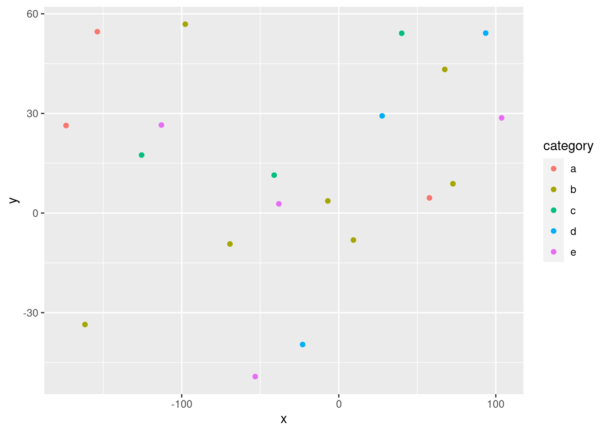

[~ 200 words]
Clearly stated background and questions / hypotheses / problems being addressed. Sets up the analysis in an interesting and compelling way.
[~ 200 words]
Narrative: Clear narrative description of the data sources and methods. Includes data from at least two sources that were integrated / merged in R.
Code: The code associated with the project is well organized and easy to follow. Demonstrates mastery of R graphics and functions.
Data: The underlying data are publicly accessible via the web and downloaded/accessed within the Rmd script. If you want to use your own data, you must make it available on a website (e.g. Figshare) so that others are able to re-run your code.
You can do bullets like this:
You can do numbers like this:
See http://rmarkdown.rstudio.com/ for all the amazing things you can do.
Here’s my first code chunk.
1+2## [1] 3Load any required packages in a code chunk (you may need to install some packages):
library(tidyverse)
library(leaflet)
library(kableExtra)
knitr::opts_chunk$set(cache=TRUE) # cache the results for quick compilingn=20
data=data.frame(x=runif(n,-180,180),
y=runif(n,-60,60),
size = runif(n, 5, 20),
category = factor(
sample(letters[1:5], n, replace = TRUE)
),
value = rnorm(n))data %>%
slice(1:10) %>% #show only 1:n rows
kable(digits=2,align="c")%>% #make table and round to two digits
kable_styling(bootstrap_options =
c("striped", "hover", "condensed", "responsive")) #apply other formatting| x | y | size | category | value |
|---|---|---|---|---|
| 0.52 | -9.89 | 5.34 | d | 0.80 |
| 123.24 | -39.22 | 16.60 | d | -0.35 |
| -11.69 | 12.40 | 19.25 | c | 0.11 |
| 171.39 | 39.35 | 9.08 | e | -1.03 |
| -155.04 | 41.77 | 15.76 | b | 0.08 |
| -71.98 | -35.47 | 5.20 | d | 0.28 |
| 126.31 | -43.65 | 13.29 | c | 0.16 |
| 164.34 | 48.68 | 16.64 | e | 0.32 |
| 74.00 | -42.32 | 8.41 | d | -0.92 |
| 139.67 | -46.54 | 9.64 | e | -0.61 |
Add any additional processing steps here.
[~200 words]
Tables and figures (maps and other graphics) are carefully planned to convey the results of your analysis. Intense exploration and evidence of many trials and failures. The author looked at the data in many different ways before coming to the final presentation of the data.
Show tables, plots, etc. and describe them.
m <- leaflet(data) %>%
addTiles() %>%
addCircleMarkers(~x, ~y, radius = ~size,color = ~as.factor(category)) %>%
addPopups(~x[2], ~y[2], "Random popup")
m # a map with the default OSM tile layerMap of completely random data
data %>%
ggplot(aes(x=x,y=y,col=category))+
geom_point()
[~200 words]
Clear summary adequately describing the results and putting them in context. Discussion of further questions and ways to continue investigation.
All sources are cited in a consistent manner